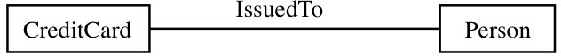
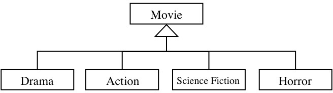

Q1. Which of the following is not likely to contribute to the complexity of software development?
Q2. Having quality design goals is of most help in reducing the complexity of:
Q3. An interface abstracts a module. Abstraction helps most in reducing the complexity of:
- designing the system.
- building the system.
- maintaining the system.
- cost and time estimates for developing the system.
- understanding the system.
Q4. An interface encapsulates a module. Encapsulation helps most in reducing the complexity of:
- designing the system.
- building the system.
- maintaining the system.
- cost and time estimates for developing the system.
- understanding the system.
Q5. Which of the following is not an issue when considering "programming-in-the-large"?
Q6. Which statement is not true about software engineering?
Q7. Which of the following is not a software engineering activity?
Q8. Which statement about the UML (Unified Modeling Language) is true?
- The UML makes us think about the world in a certain way.
- The UML can be used to model only software systems.
- The UML can be used for only object-oriented software systems.
- The UML is a software development process.
- The UML provides a fixed set of modeling elements.
Q9. Which of the following UML concepts is not a classifier?
Q10. In software engineering, we build models of a software system to:
- reduce the workload on the project team.
- help us deal with the complexity of a problem.
- reduce the amount of communication with the users.
- know which people to hire into the project team.
- know which language to use for implementation.
Q11. In the UML, the interface of an object contains only
- attributes.
- values.
- methods.
- operations.
- variables.
Q12. In the UML, a class is a description of a group of objects that have common
- attributes, operations, relationships and semantics.
- identity, operations, relationships and semantics.
- attributes, operations, roles and semantics.
- attributes, operations, relationships and multiplicity.
- attributes, coverage, relationships and semantics.
Q13. Which of the following is not a property of an attribute in the UML?
- data type
- multiplicity
- visibility
- signature
- changeability
Q14. Which of the following statements is not true about an association relationship?
- It is inherently bi-directional.
- It can be restricted to be only unidirectional.
- It represents an instance of the relationship.
- It can normally only be read meaningfully in one direction.
- It is a description of a group of instances of the relationship.
Q15. Is it possible for there to be more than one association
- Yes, always.
- Yes, but only for ternary and higher order associations.
- Yes, if the multiplicity is many to many (N:M)
- No, no way.
- Gee, I don't know!
Q16. In the UML the multiplicity of an association specifies
- which classes can be related to each other.
- how many classes participate in the association.
- the navigability of the association.
- the number of objects that must/can be related.
- whether role names are required.
Q17. Considering what is true in the real world, what is the most likely multiplicity of the IssuedTo association?

- CreditCard (1..*) -----IssuedTo----- (1..1) Person
- CreditCard (0..*) -----IssuedTo----- (1..1) Person
- CreditCard (1..1)-----IssuedTo----- (0..*) Person
- CreditCard (1..1)-----IssuedTo----- (1..*) Person
- CreditCard (0..*) -----IssuedTo----- (1..*) Person
Q18. A drawing object is text, a geometric object or a group of text and geometric objects. Which kind or kind(s) of relationship(s) are needed to correctly model this situation?
- association only
- generalization only
- composition and generalization only
- association and generalization only
- all of association, composition and generalization
Q19. When is an association class needed?
- When the multiplicity of the relationship is many-to-many (N:M).
- When the relationship is unidirectional.
- When the relationship has properties.
- When the relationship is mandatory.
- When the relationship is optional.
Q20. In the UML, the concept of generalization
- relates two different classes by an association relationship.
- allows a class to remove attributes and operations from its subclasses.
- supports the concept of stereotype.
- allows a class to specialize its attributes and operations.
- links instances of different classes together.
Q21. Which of the following is a generalization coverage constraint?
Q22. The incomplete coverage constraint for a generalization relationship means that:
- a superclass instance can be a member of one or more of the subclasses. [overlapping]
- some subclass instance is not a member of any superclass. [not possible]
- a superclass instance can be a member of at most one of the subclasses. [disjoint]
- each superclass instance is a member of some subclass. [complete]
- some superclass instance is not a member of any subclass.
Q23. Considering what is true in the real world, the generalization shown in the figure is:

- overlapping and complete.
- disjoint and complete.
- overlapping and incomplete.
- disjoint and incomplete.
- none of the above.
Q24. An exclusive or (XOR) constraint states that
Q25. Which of the following statements is true about custom software?
Q26. A milestone in a software development project is
Q27. Which of the following is a benefit of having a software development process?
- It is not necessary to train the developers.
- We have to gather fewer requirements from users.
- It is easier to divide up the work among development team members.
- It is not necessary to maintain the system.
- There is less need for the development team to communicate with the users.
Q28. Which of the following is a benefit of the Waterfall software development process?
- It is easier to deal with vague user requirements.
- It develops the system incrementally.
- It is easier to find people with the required development skills.
- It makes the software development process more disciplined.
- It makes it easier to get user feedback early in the project development.
Q29. Risk analysis is introduced in which software development process?
- Waterfall
- Prototyping
- Agile
- Phased-release
- Spiral
Q30. Which of the following is not a way to deal with risks in software development?
Q31. Which of the following is not an emphasis of an Agile development process?
x = 2 * y;
z = x + y;
{z > 0}- {y >= 0}
- {x > 0}
- {y > 0 && x > 0}
- {y > 0}
- {z > 0}
Q33. Defensive programming means that you
- do not let anyone else read your code.
- do not let input data crash your program.
- do not let anyone else change your code.
- do not use object-oriented programming languages.
- do not let anyone else test your code.
Q34. Refactoring code means that you
- reduce the number of input parameters.
- isolate bugs by rewriting the code.
- add assertions to the code.
- improve the internal structure of the code.
- improve the interaction among components.
Q35. Which reason for the failure of or problems with software development is not related to requirements capture?
Q36. In domain modeling we capture the system's most important
Q37. When reducing the schema shown in the figure to tables, which option would you choose?